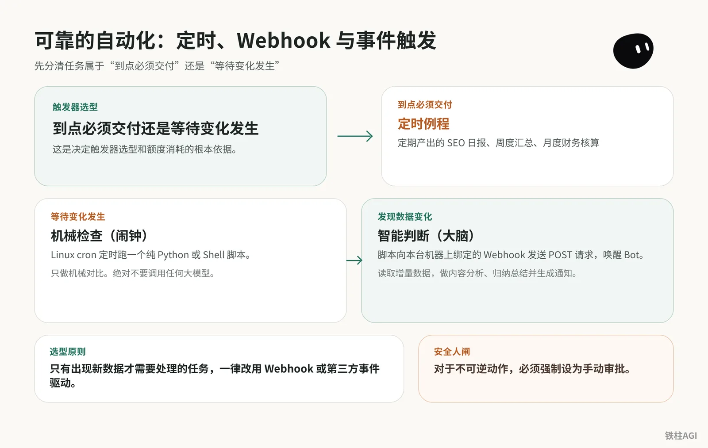
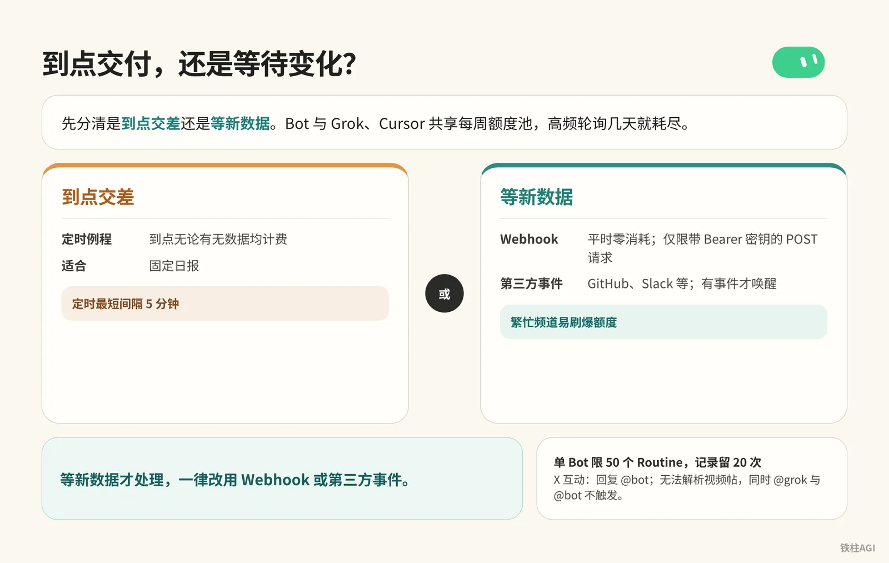
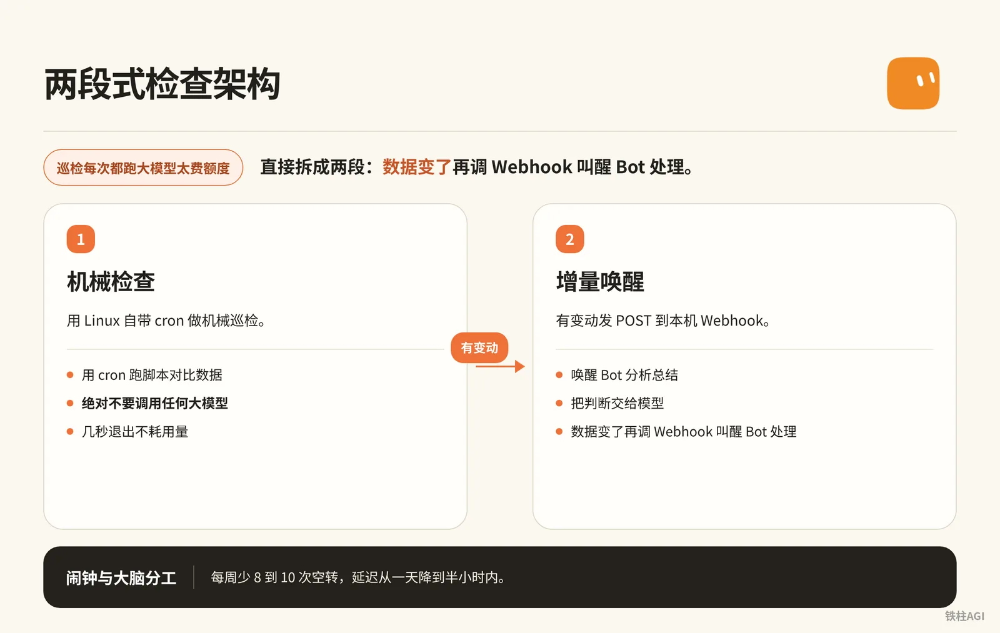
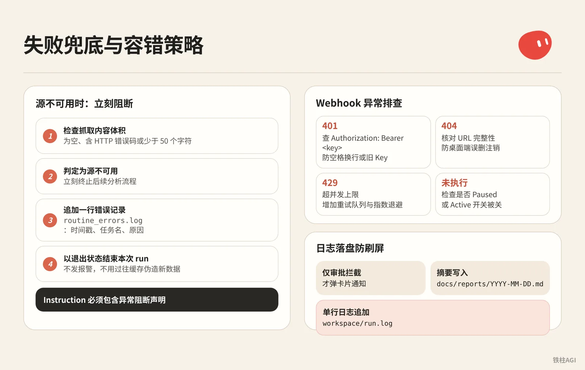

铁柱AGI · 35/60
第 20 章 可靠的自动化：定时、Webhook 与事件触发
Routine (a task the bot runs on a schedule or a trigger) 每天醒几十次只回“今日无变化”，额度 (quota (how much use your plan allows))照扣。任务缺乏规范极易静默出错。
- 时区偏差（早 9 点跑在凌晨 3 点）
- 周期误判（默认工作日导致周末漏网）
- 缺少兜底（报错顺着空数据乱改线上）
两段式架构配 Linux cron 能砍掉 80% 以上空转。写入边界合同与安全人闸，打通快捷指令和 X 事件流，自动化才能稳定省钱。

触发器选型：到点交付还是等待变化

先分清是到点交差还是等新数据。Bot 与 Grok、Cursor 共享每周额度池，高频轮询几天就耗尽。
订阅与配额限制
The X Subscription（2026-10-12）中 Plus 无 Bot，支持档为 Premium（$30/月或$300/年，4x）、Super（$100/月或$1000/年，15x）、Ultra（$200/月或$2000/年，50x）。
单 Bot 限 50 个 Routine，记录留 20 次，定时最短间隔 5 分钟。
触发方式与选型
- 定时例程：到点无论有无数据均计费，适合固定日报。
- Webhook (a web address that triggers an action when called)：平时零消耗，仅限带 Bearer 密钥的 POST 请求。
- 第三方事件（GitHub (a site for storing and sharing code)、Slack (a work chat app) 等）：有事件才唤醒，繁忙频道易刷爆额度。
- X 互动（回复 @bot）：无法解析视频帖，同时 @grok 与 @bot 不触发。
等新数据才处理，一律改用 Webhook 或第三方事件。
例程设计模板：写合同而不是写头衔
提示词 (prompt (the instruction you give the AI))只写头衔容易跑崩，生产例程必须写明执行合同。
出处见 《4.3 触发器与自动化：定时、Webhook、在 X 上派活》，需备齐四要素，涵盖数据源、输出格式，以及缺失报错与人工审批策略。
编写合同与配置例程
- 把约束输入输出的合同发给 Bot 并让它记住；共享 Bot 则写入详情 About 的 Description。
负责范围：监控指定数据源并生成标准化 Markdown 摘要。
允许读取的数据源：工作区目录下的 data/incoming/ 文件夹及指定公开 RSS 链接。
输出格式规范：必须输出包含“标题、核心要点（最多3条）、影响评估、原始链接”的 Markdown 结构，存入 docs/daily/ 目录。
数据异常策略：若数据源无更新或文件为空，仅在工作区追加一行日志“[时间戳] NO_NEW_DATA”，严禁编造或推测新闻内容，严禁在聊天窗口发送刷屏提示。
权限边界：只读外部内容与本地写入。禁止调用外部发帖、转账、发送邮件或删除文件操作。- 聊天中把工作流 (workflow (a chain of steps done in order))存为含自检逻辑的 Skill (a saved how-to the bot can reuse)，直接发指令建定时例程。
每个工作日上午 8:30，运行“晨间资讯归档”Skill。如果数据源没有更新，记录日志后保持沉默。在 Details 的“例程”列表用开关切换 Pause 或 Resume。
点进面板可改 Instruction、When to run、Webhook，底部支持 Pause/Resume、Test、Edit 与 Delete routine（垃圾桶图标）。
上线前干跑测试
例程在云端虚拟机跑真实操作，所有 Bot 默认共用底层运行环境且无沙箱隔离，失控会改动真实文件。开启前先在聊天中发指令干跑验证。
针对即将上线的例程“晨间资讯归档”，进行一次干跑验证：
1. 复述你理解的执行触发条件与完整业务流程。
2. 列出本次执行涉及读写操作的路径，以及可能产生风险的 3 个最高风险步骤。
3. 说明如果源文件损坏或格式错误，你的具体兜底动作。
现在不要执行任何实际写文件和网络请求操作，仅输出分析报告。锁死安全人闸
前往 Settings 的 Custom Rules（或 Auto-review），对不可逆动作强制设为手动审批。
| 拦截指令 | 动作范围 |
|---|---|
send / post | 外发消息、邮件或社媒 |
buy / transfer | 支付与转账接口 |
delete / permissions | 文件数据库删除、权限变更 |
指令触发后系统会弹出审批卡停住执行，持续等待人工确认，绝不自动外发。
Webhook 接入：移动端与外部流水线打通
出处：《Grok Bot Webhook + 快捷指令：知识自动入库流水线搭建》
凭证与状态
例程选“当 Webhook 被触发时”，必须点 Save 才会生成地址、密钥与 Header。v0.68.1 若卡片看不全 URL，让 Bot 在聊天发链接复制，密钥勿发公开群。
返回 200 仅代表云端已启动，不代表执行完毕。结果去聊天窗口看；非 200 检查例程是否 Paused 与密钥。
快捷指令
带分享面板（浏览器等）：
- 勾选“在共享表单中显示”，接收链接与文本。
- 用“获取 URL 内容”发 POST，请求头填
Authorization: Bearer <key>，JSON 体加content填快捷指令输入。
接收端 Bot 的配套 Instruction 模板：
收到 Webhook 传入的 JSON 数据后，提取 content 字段中的链接。
如果是普通网页，抓取正文，提炼核心结论与知识点。
整理完成后，以 Markdown 格式追加写入知识库目录下的 inbox.md，包含收录时间、原文链接、核心观点与分类标签。
处理完毕后在聊天中输出一句话确认回执。无分享面板（微信等）：
- 用“请求文本”接“运行快捷指令”转发。
- 绑定 iPhone 15 Pro 操作按钮或主屏幕，复制后弹窗提交。
大文件不能直接塞请求体。音视频和图片先传网盘换公网 URL 再发给 Bot。
增量判断避免空跑：两段式检查架构

巡检每次都跑大模型太费额度，直接拆成两段。
- 用 Linux 自带 cron 做机械巡检。
- 数据变了再调 Webhook 叫醒 Bot 处理。
出处：《Grok Bot 额度再省一点：定时任务极限优化》。
1. 解耦原理：闹钟与大脑分工
Grok Bot (xAI's AI assistant that comes with its own computer) 背后是常开的 Linux 云电脑。
- 机械检查：用 cron 跑脚本对比数据。期间绝对不要调用任何大模型，几秒退出不耗用量。
- 增量唤醒：有变动发 POST 到本机 Webhook，唤醒 Bot 分析总结。
把 6 个例程中的等待类改完，耗时约 23 分钟，每周少 8 到 10 次空转，延迟从一天降到半小时内。
2. 虚拟机落地配置步骤
- 在 Bot 上添加一条“增量处理中心”例程，触发选 Webhook，保存好 Webhook URL 和 Bearer 密钥。
- 打开终端，在工作区建脚本
check_update.sh：
2. 虚拟机落地配置步骤
#!/bin/bash
# 监测目标 API 或页面是否有增量变化，纯机械对比，严禁调用 LLM
TARGET_URL="https://api.example.com/v1/feed"
STATE_FILE="/home/user/workspace/last_state.hash"
WEBHOOK_URL="https://your-bot-webhook-url.com/api/v1/run"
WEBHOOK_KEY="Bearer YOUR_SECRET_KEY"
# 获取最新数据的哈希值或时间戳
CURRENT_HASH=$(curl -s "$TARGET_URL" | md5sum | awk '{print $1}')
if [ ! -f "$STATE_FILE" ]; then
echo "$CURRENT_HASH" > "$STATE_FILE"
exit 0
fi
OLD_HASH=$(cat "$STATE_FILE")
# 比对是否有变化
if [ "$CURRENT_HASH" != "$OLD_HASH" ]; then
echo "检测到数据更新，正在唤醒 Bot..."
echo "$CURRENT_HASH" > "$STATE_FILE"
# 叫醒 Bot 进行智能分析
curl -X POST "$WEBHOOK_URL" \
-H "Authorization: $WEBHOOK_KEY" \
-H "Content-Type: application/json" \
-d '{"event": "data_changed", "source": "feed_monitor"}'
else
# 无变化，保持沉默，零额度消耗
echo "无新变化，退出。"
fi- 终端安装并启动 cron 服务：
sudo apt-get update && sudo apt-get install -y cron
sudo service cron start跑 crontab -e 设定时（工作日早 9 点到晚 7 点，每 30 分钟检查一次）：
*/30 9-19 * * 1-5 /bin/bash /home/user/workspace/check_update.sh >> /home/user/workspace/cron_check.log 2>&1- 客户端点“更新电脑”会重置系统：工作区脚本虽在，但
apt-get装的 cron 会被抹掉，更新后必须重装并启动一次。 - 脚本别调大模型 API (a way for programs to talk to each other)：只做轻量检测，把判断交给模型省不下成本，开销全转去 API 计费了。
第三方事件与 X 平台联动
Slack 触发器
Slack 触发器属于例程体系，用前需在账户绑定 Slack，参考《Routines 帮助》。
- 切勿在公开频道设“收到任意消息”触发，闲聊一天就会耗尽整周额度。
- 仅监听
#alerts-p0或#deploy-status等专属通知频道。 - 必须带触发前缀，如
!bot review或@bot summary。 - 只响应建立后产生的新消息，不追溯历史。
X 平台联动边界
v0.70.2 起无需绑个人账号即可搜推文。
在推文下评论 @bot 会通知星标主 Bot 分流，参考《4.3 触发器与自动化：定时、Webhook、在 X 上派活》。
- 限制：无法解析视频推文；评论同时带
@grok和@bot会冲突不触发。 - 防注入：主 Bot 仅允许做摘要、分类与入库，严禁自动发帖、点赞或改动云电脑，所有对外动作必须退回桌面客户端人工确认。
失败兜底与容错策略

接口超时或返回空数据易脑补，Instruction 必须包含异常阻断声明：
前置校验步骤：
1. 检查抓取到的内容体积。如果内容为空、包含 HTTP 错误码（如 403、404、500）或少于 50 个字符，判定为源不可用。
2. 源不可用时，立刻终止后续分析流程。
3. 在 workspace/logs/routine_errors.log 中追加一行错误记录，格式：[ISO时间戳] [任务名] SOURCE_UNAVAILABLE [原因]。
4. 不得在公开聊天窗口发送报警消息，不得使用过往缓存伪造新数据，直接以退出状态结束本次 run。Webhook 异常排查：
- 401：Header 查
Authorization: Bearer <key>，防多出空格换行或用了旧 Key。 - 404：核对 URL 完整性，防桌面端误删注销。
- 429：超并发上限，必须增加重试队列与指数退避。
- 未执行：检查是否被 Paused，或手机端 Active 开关被关。
日志落盘防刷屏：仅审批拦截才弹卡片通知；摘要写入 docs/reports/YYYY-MM-DD.md，单行日志追加到 workspace/run.log。
监控与日常维护
桌面端在 Details、手机端在配置文件里看例程，Failed 能点开看报错堆栈。
每周查 Usage & Billing（v0.70.2 修复了用量显示），消耗陡增说明有例程在空转或重试。
每周五固定花 15 分钟清理例程。
- 调出
workspace/run.log看实际产出。 - 连续 7 天无增量的例程先 Pause。
- 停跑两周无依赖再 Delete routine，删除不可撤销且 Webhook 同步失效。
容易踩的坑
- 工作日机制：设“每天 8 点”常被当成工作日。全天候任务提示词必须写明“包含周六和周日”。
- 时区偏差：建 Routine 先去 Settings -> Bot -> Timezone 查时区。云端默认 UTC，设 9 点会跑在深夜。
- 加号建 Bot 失效：侧边栏（+）新建容易卡死，不跑就让成熟 Bot 对话派生新 Bot。
- 凭证未保存：配 Webhook 必须点底部 Save 签发，直接切走页面会导致密钥未生成。
- 系统更新重置：“更新电脑”（Update computer）会初始化镜像，
apt-get装的 cron 会丢，更新后进终端查 cron。 - 密钥泄露：别把 Webhook 密钥贴进普通聊天。误发后立刻删消息并在例程重置。
- Test 真实执行：点 Test 会消耗用量并改动文件，严禁在生产数据上测试。
做完怎么验收
- 桌面端看 When to run 里的英文计划（如“Every day at 8:00 AM CST”），对准本地时区与周末。
- 新例程等下个周期才跑，看 Next run 时间准不准。
- 把数据源改名或留空，点 Test 跑一次，确认输出“数据源异常”日志且平稳停住，没瞎编信息。
- 注入发邮件、发帖或删目录指令，确认操作被拦截并弹卡片，没直接向外发包。
- 终端用 curl 向 Webhook 发 POST 请求：
curl -i -X POST "你的_WEBHOOK_URL" \
-H "Authorization: Bearer 你的_KEY" \
-H "Content-Type: application/json" \
-d '{"test": "ping"}'检查 1 秒内收到 200 状态码，30 秒内客户端里 Bot 变 Running 并输出回执与结构化结果。